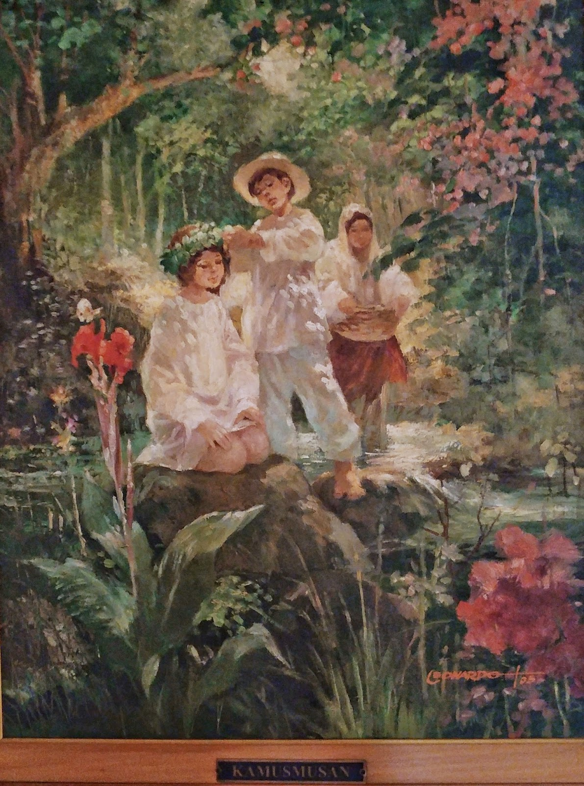
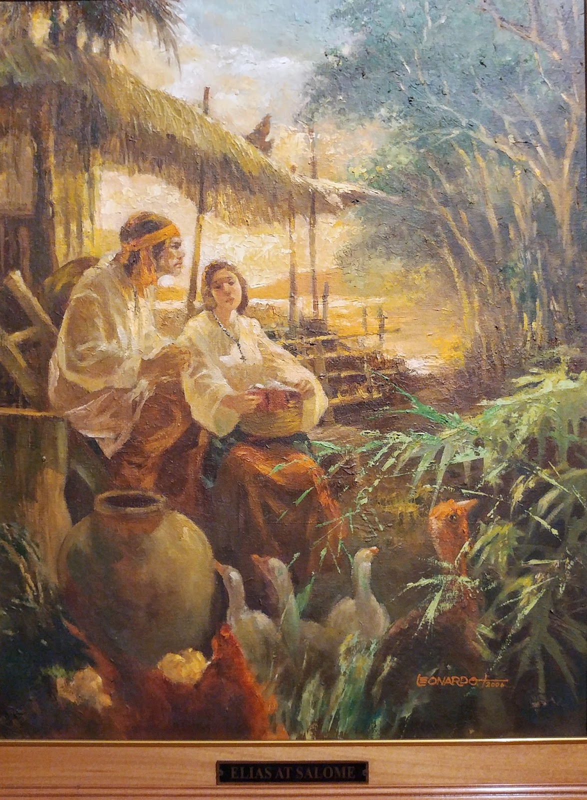
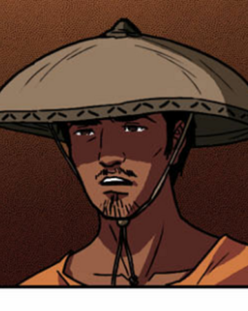

<html> 
    <head>
        <title> NOLI ME TANGERE: KABANATA 24 </title>
        <link rel="stylesheet" href= "grid.css">
    </head>
</html>
 
<style>
    body {
        background-color: #b8936b;
    }
    h2 {
        background-color: #d7bfae;
    }

    p {
        background-color: #d3bfa6;
    }
</style>

<h1>Kabanata 24: Ang Kagubatan|Elias at Salome</h1>

<div class="container">
    <div class="box">
        <h2><center>BUOD</center></h2>
        
        <p>Pagkatapos magmisa at magbasa ng mga ng mga liham na hindi naman nagbigay saya sa kura, pumunta na ito sa 
            piknik sa lawa. Habang naghahanap ng pugad ng tagak sa may batis, pinag-uusapan ng mga dalagang nag ngangalang
           Maria Clara, Sinang at Victoria si Padre Salvi patungkol sa kanyang pangangayayat at pag lalim ng mata dahil sa 
           paninibugho. Ang hindi nila alam ay may kurang nakikinig sakanilang usapan.Lumabas ang kura sa kaniyang pinagtaguan pagkalayo ng mga dalaga at tumuloy na sa pinagdarausan ng piging. Naroon
           din sa nasabing pagsa-salo ang alperes, kapitan, bise-alkalde, ang guro, mga dating alkalde, at si Kapitan 
          Basilio. Nang tanungin ang katauhan ng kura, sinabi niya na lamang na siya ay naligaw at nagalusan kaya mayroong 
          mga dahong dumikit sa kanya. Iba-iba ang paraan ng mga kasama sa piknik para maglibang. Ang iba ay nagku-kuwentuhan,
        naglalaro ng baraha, ahedres, at ibang larong ginagamitan ng bato o sigay. Ilan sa mga napag-usapan ay ang pagkabugbog 
        ni Padre Damaso, ang kinahinatnan ni Sisa at kaniyang mga anak kung saan ay nagturuan ang mga alperes at kura kung sino dapat
        managot sa nangyari sa mag-iina, at ang laman ng natanggap ni Crisostomo na telegram. Nakalagay sa telegrama na 
        pinahihintulutan ng paaralang ipapatayo ng binata. Inialaya ni Crisostomo ito kay Maria Clara na may pinaka magandang
        sagot sa larong <i>Gulong ng Kapalaran.</i>Inialay ng binatang Ibarra ang ipapatayong paaralan sa magandang 
        dalaga. Hindi naman nasiyahan ang mga kura ang paglalarong iyon dahil hindi daw ito naaayon sa Bibliya. Habang 
        nagsasaya ang lahat, dumating ang guwardiya sibil. Hinahanap ng mga ito si Elias na sinasabing naglugmok sa alperes
        sa putikan na naging dahilan ng pagkahiya nito. Siya din ang pinaghihinalaang bumugbog kay Padre Damaso ngunit hindi
        na nila ito nakita. Natapos ang piknik at nag uwian na ang mga tao sa kani-kanilang tahanan </p>

        
        <p>Galing sa piknik, nagpunta si Elias sa isang bahagi ng lawa malapit sa kagubatan. Sa lugar
            na iyon, ay mag dalagang naghihintay sakaniyang  nag ngangalang Salome. Napansin ni Salome na malungkot ang piloto
           ng mga galing sa piknik. Nagtanong ito ng mga nangyari sa piknik. Naikuwento ni Elias si Maria Clara na pinuri pa nito 
           dahil sa kagandahan at katalinuhan ng dalaga na naging sanhi ng pagluha ni Salome. Ang isa pang kadahilanan ng 
           pagkalungkot ng dalaga ay ang kaniyang paglipat sa Mindoro kasama ang kanyang mga kamag-anak niya dahil siya ay naulila
           na. Tinanong ni Elias ang dalaga kung nagsasawa na ang dalaga sakaniya. Humindi ang dalaga. Sinabi ng piloto na gusto
           niyang pakasalan ang dalaga ngunit ayaw niya itong madamay sa kamalasan ng kaniyang angkan. Dahil dito, hiniling ng
          binata na na kalmutan na lamang siya ng dalaga. Umiyak si Salome dahil akala niya ay sasama sakanya si Elias. Tumanggi
          si Elias dahil sa pangako niya sa bangkay ng kaniyang kapatid na babae, sumpa ng paghihiganti na hindi naiisasakatuparan
          . Hiniling ni Salome na sa damang pagmamay-ari ng pamilya niya tumira si Elias bilang tanda ng kaniyang pagmamahal 
          sa binata. Hinagkan ni Elias sa pisngi ang dalaga bago tuluyang tumakbo palabas. Alam ni Salome na iyon na ang huling
          yabag na kaniyang maririnig mula sa pinakamamahal niyang si Elias.</p>

    </div>

    <div class="box">
        <h2>REPLEKSYON</h2>

        <p>Meron pong mga aral na makukuha sa kabanatang natalakay. Isa po sa mga aral ang pagiging
            maingat sa mga sasabihin at gagawin na maaaring makaapekto sa ibang tao. Kasunod po nito ay ang pag pili ng taong may
            napatunayan para ipagkatiwala sakaniya iyong ibibigay katulad ng pagpili ni Don Ibarra kay Maria Clara. Pangatlo po ay
            ang pagintindi sa pinagdadaanan ng bawat isa, ito po ay isa mga dapat alam gawin ng lahat katulad ni Elias at Salome. At
            ang panghuli po ay ang pagtupad ng mga pangako na binitawan katulad po ng ginawa ni Elias sa kaniyang kapatid na babae.</p>
    </div>

    <div class="box">
        <h2>PAGLALARAWAN NG ISANG KARAKTER</h2>
        <h3>Elias</h3>
        
        <p>Si Elias ay isa sa mga pangunahing tauhan sa nobelang <i>Noli Me Tangere.</i> Si Elias
            ay isang binatang lumaki sa mayamang pamilya. Anak siya ng nanay niyang galing sa mayaman na pamilya at ang kanyang alam
            ay normal na mamamayan. Siya ay unang gumanap sa Kabanata 23. Siya ay isang piloto ng bangka na sinakyan ni Ibarra at ng
            kaniyang mga kaibigan. Nakilala ni Elias si Ibarra nang sagapin siya nito sa buwayang muntik ng pumatay sa kanya. Sa 
            Kabanata 24, nasabing si Elias ay isang kriminal na bumugbog kay Padre Damaso. Sa Kabanata ding iyon ay nagpaiwan
            siya sa kaniyang pinakamamahal na si Salome para tuparin ang kaniyang pangako sa kaniyang kapatid. Mailalarawan si Elias 
            bilang isang taong hindi makasarili sa mga unang tagpo ng nobela. Nang nalaman niya ang totoo tungkol sa kaniyang pamilya
            , tinalikuran niya ang lahat pati ang kaniyang buhay mayaman. Pagkatapos nito, siya ay naging dedikado sa kaniyang ginagawa
            na pagtulong sa nga taing naapi. Dahil sa kaniyang pinagdaanan naniniwala siyang karahasan na lang ang tanging sagot 
            para mabago ang kapalaran o maaaring mangyari sakaniya at sa mga kasama niya ngunit ito ay nabago dahil sa usapan nila ni
            Ibarra. Napag-usapan nila ang tungkol dito kaya't ang kaniyang pananaw. Si Elias ay namatay para kay Ibarra na 
            sinasabing dahilan ng kamalasan ng kanilang pamilya. Sa tingin ni Elias, siya at ang kanyang pamilya ay nasumpa.</p>
    </div>


  
 
</div>